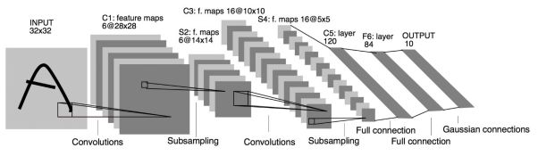

Oct 19, 2018 原创文章
Hello Pytorch 零 -- 搭建年轻人的第一个神经网络：LeNet
经典网络模型：LeNet
LeNet 这一经典网络模型由LeCun 于1988年提出，发表在论文《Gradient-Based Learning Applied to Document Recognition》中。最初是用来进行手写字体识别，现已经被扩展到多个应用场景中。这里使用LeNet网络，实现对CIFAR-10数据集的分类识别。
网络结构

在这个网络中，使用了三个卷积层，一个全连接层和两个下采样层。
输入：
网络的输入是一个32×32的单通道图片。
卷积层：
网络中使用了两个卷积层，C1、C3和C5。
在C1中，卷积核的大小为5，输出通道数设置为6，因此这一层得到的计算结果为6个28×28的特征映射（feature map）。连接数为(5×5+1)×6×28×28 = 122304，参数数量为(5×5+1)×6=156。
在C3中，卷积核的大小为5，输出通道数设置为16，因此这一层得到的计算结果为16个10×10的特征映射。连接数为(5x5x3+1)x6+(5x5x4+1)x9+(5x5x6+1)x10x10=151600。参数数量为(5x5x3+1)x6+(5x5x4+1)x9+(5x5x6+1)=1516。
在C5中，卷积核的大小为5，输出通道数设置为120，因此这一层得到的计算结果为120个1×1的特征映射。参数数量为120x(5x5x16+1)=48120。
全连接层：
网络中使用了一个全连接层F6，其输入大小为120，输出为84。共有(120+1)×84个连接，其中+1为偏置。
下采样（池化）层：
网络中使用了两个下采样层，分别为S2和S4，这里是通过最大池化实现下采样，池化大小为2×2。对于S2，连接数为6x14x14x(2x2+1)=5880，参数数量为6x(1+1)=12。对于S4，连接数为5x5x16x(2x2+1)=2000，参数数量为16x2=32。
池化的过程：首先对输入的图像进行分块，根据池化大小则每个块的大小为2×2，然后将每个块中的最大的值作为下采样的新像素。
输出层：
网络中的输出层共有10个节点，分别代表数字0到9。如果第i个节点的值为0，则表示网络识别的结果是数字i。
理解网络
如果将整个视为一个函数，其输入是一个大小为32×32的图像，输出为一个具有10个元素的向量。通过对比向量中元素的大小确定预测分类。
CIFAR-10训练集
CIFAR-10 是一个常用的彩色图片数据集，拥有十个类别，分别为’plane’,’car’,’bird’,’cat’,’deer’,’dog’,’frog’,’horse’,’ship’,’truck’。数据集中每个图片的大小都是3×32×32，其中的图片数为6000个，在这6000个图片中，有5000个是训练集，1000个测试集。
下载地址：https://www.cs.toronto.edu/~kriz/cifar-10-python.tar.gz
搭建网络
在原始的LeNet中，输入数据是单通道32×32的图像，而CIFAR-10数据集中的样本是三通道32×32。因此需要对LeNet进行简单的修改。C1的输入改为3×32×32即可得到所需的网络。
代码示例
导入所需的包
import torch as t
from torch import optim
# 导入torchvision 包
import torchvision as tv
import torchvision.transforms as transforms
from torchvision.transforms import ToPILImage
# 导入torch.nn 包
import torch.nn as nn
# 导入import torch.nn.functional 包
import torch.nn.functional as F
torch.optim
torch.optim 包中封装了多种常用的优化算法
参见：https://pytorch.org/docs/stable/optim.html
torchvision
torchvision 包中封装了各种计算机视觉领域常用的数据集、模型结构和图像变换
参见：https://pytorch.org/docs/stable/torchvision/index.html
torchvision.transforms
torchvision.transforms 包中封装了多种图像变换算法，使用 torchvision.transforms.Compose 可以将多种变换组合使用。
参见：https://pytorch.org/docs/stable/torchvision/transforms.html
torch.nn
torch.nn 包中封装了多种神经网络的结构
参见：https://pytorch.org/docs/stable/nn.html
torch.nn.functional
torch.nn.functional 包中封装了网络层结构
参见：https://pytorch.org/docs/stable/nn.html#torch-nn-functional
定义对数据的预处理
transform = transforms.Compose([
transforms.ToTensor(), # 转为 Tensor
transforms.Normalize((0.5,0.5,0.5),(0.5,0.5,0.5)),# 归一化
])
class torchvision.transforms.ToTensor()
将PIL Image 或 numpy.ndarray 转换 tensor、
参见：https://pytorch.org/docs/stable/torchvision/transforms.html#torchvision.transforms.ToTensor
class torchvision.transforms.Normalize(mean, std)
用于对数据的所有通道逐一进行归一化处理。
参见：https://pytorch.org/docs/stable/torchvision/transforms.html#torchvision.transforms.Normalize
定义训练集
trainset = tv.datasets.CIFAR10(root='/cifar10/',
train = True,
download = False,
# 建议提前将数据集下载好，放入根目录下
# 否则这里应设置为True
transform = transform
)
trainLoader = t.utils.data.DataLoader(
trainset,
batch_size=4,
shuffle=True,
num_workers=2
)
class torchvision.datasets.CIFAR10(root, train, transform, target_transform download)
使用CIFAR-10数据集。
参见：https://pytorch.org/docs/stable/torchvision/datasets.html#torchvision.datasets.CIFAR10
class torch.utils.data.DataLoader(dataset, batch_size, shuffle, sampler, batch_sampler, num_workers, collate_fn, pin_memory, drop_last, timeout, worker_init_fn)
设置训练集的数据加载器。
1、设置为训练集
2、设置每个batch有4个样本数据
3、设置对每个epoch将数据集打乱
3、设置使用2个子进程用来加载数据
参见 ：https://pytorch.org/docs/stable/data.html#torch.utils.data.DataLoader
定义测试集
testset = tv.datasets.CIFAR10(root='/cifar10/',
train = False,
download = False,# 同上
transform = transform
)
testLoader = t.utils.data.DataLoader(
testset,
batch_size=4,
shuffle=False,
num_workers=2
)
同上一部分相同
定义网络
class Net(nn.Module):
# 定义网络结构
def __init__(self):
super(Net,self).__init__()
self.conv1 = nn.Conv2d(3,6,5) # 卷积层C1
self.conv2 = nn.Conv2d(6,16,5) # 卷积层C3
self.fc1 = nn.Linear(16*5*5,120) # 全连接层S2
self.fc2 = nn.Linear(120,84) # 全连接层S4
self.fc3 = nn.Linear(84,10) # 全连接层OUTPUT
# 定义前向传播函数
def forward(self,x):
x = F.max_pool2d(F.relu(self.conv1(x)),(2,2))
x = F.max_pool2d(F.relu(self.conv2(x)),2)
x = x.view(x.size()[0],-1)
x = F.relu(self.fc1(x))
x = F.relu(self.fc2(x))
x = self.fc3(x)
return x
net = Net()
定义损失函数和优化器
criterion = nn.CrossEntropyLoss()
optimizer = optim.SGD(
net.parameters(),
lr = 0.001,
momentum=0.9)
class torch.nn.CrossEntropyLoss(weight, size_average, ignore_index, reduce, reduction)
将损失函数设置为Cross-Entropy 函数
参见：https://pytorch.org/docs/stable/nn.html#torch.nn.CrossEntropyLoss
class torch.optim.SGD(params, lr, momentum=0, dampening=0, weight_decay=0, nesterov)
使用螺旋梯度下降。
参见：https://pytorch.org/docs/stable/optim.html#torch.optim.SGD
训练网络
for epoch in range(70): # 设置训练的迭代次数
running_loss = 0.0
for i,data in enumerate(trainLoader,0):
# 输入数据
inputs,labels = data
# 梯度清零
optimizer.zero_grad()
# forward + backward
outputs = net(inputs)
# 计算损失值
loss = criterion(outputs,labels)
loss.backward()
# 更新参数
optimizer.step()
# 打印log信息
running_loss += loss.data[0]
if i%2000 == 1999:
print('[%d,%5d] loss:%.3f' %(epoch+1,i+1,running_loss/2000))
running_loss = 0.0
print('Finished Training')
测试效果
# 计算图片在每个类别上的分数
dataiter = iter(testLoader)
images, labels = dataiter.next() # 一个batch返回4张图片
outputs = net(images)
# 得分最高的那个类
_, predicted = t.max(outputs.data, 1)
print('预测结果: ', ' '.join('%5s' % classes[predicted[j]] for j in range(4)))
在测试集中测试准确率
correct = 0 # 预测正确的图片数
total = 0 # 总共的图片数
# 由于测试的时候不需要求导，可以暂时关闭autograd，提高速度，节约内存
with t.no_grad():
# 在测试集中迭代数据
for data in testLoader:
# 读取数据的数据内容和标签
images, labels = data
# 得到网络的输出
outputs = net(images)
# 得到预测值
_, predicted = t.max(outputs, 1)
# 累积计算数据集的大小
total += labels.size(0)
# 累积计算预测正确的数据集的大小
correct += (predicted == labels).sum()
print('10000张测试集中的准确率为: %d %%' % (100 * correct / total))